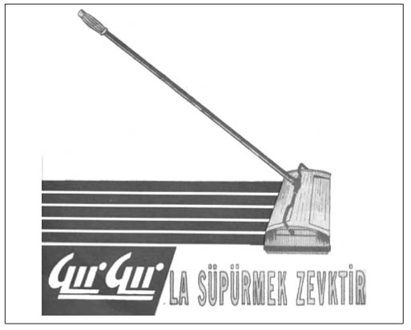

F-G
Fabrikalar Kuran Fabrika (Kardemir’in öteki adı): 1930’lu yılların Türkiyesi’nde sanayileşme, ülkeyi çağdaş uygarlık seviyesine dönüştürmek isteyen genç Kemalist kadro için en büyük hedefti. Sanayileşmenin temel direği de, ağır sanayi tesisi olan demir-çelik fabrikalarıydı. Demir-çelik tesislerinin kuruluş yeri ve diğer sorunların incelenmesi için Sümerbank ve Genelkurmay temsilcilerinden bir kurul oluşturuldu. İncelemeler sonucunda, tesisin Zonguldak’ta kurulmasına karar verildi. Genelkur-may’ın deniz top atışlarının atış menzili dışında kalması yönündeki ısrarı üzerine Zonguldak’tan 70 kilometre içeride, 11-12 haneli Karabük köyünde karar kılındı. Türkiye’nin ilk entegre demir-çelik sanayiinin temeli, 1937’de atıldı. Temele ilk harcı atan dönemin Başbakanı İsmet İnönü şunları söylüyordu:
“Karabük Demir ve Çelik Fabrikaları adı dikkatinizi celp etmiştir. Demir-çelik fabrikaları yedi tane büyük fabrikadan mürekkeptir. Bunlardan her biri her memlekette başlı başına birer kıymet sayılabilir. Yüksek fırınlar, çelik fırınları, kok fırını, haddehane, 20 bin kw kudretinde bir elektrik santrali, büyük bir atölye ve tali maddeler fabrikası; bugün meydana getirilmesi kararlaştırılmış olan bunlardır. Bu müesseselere dayanarak yeniden kurulacak fabrikalar ayrıca bir mevzu olacaktır.”
Bu sözleriyle İsmet Paşa haklı çıkacak ve ileride, Türkiye ve Balkanlar’ın en büyük ve Avrupa’nın da hatırı sayılır tesislerinden biri olarak Kardemir, “Fabrikalar Kuran Fabrika” unvanını taşımaya hak kazanacaktı. Afşin-Elbis-tan Termik Santrali, Petkim, Seydişehir Alüminyum Tesisi, Karakaya Barajı, Fırat Köprüsü; Pendik, Taşkızak ve Alay-bey Tersaneleri ile Erdemir ve İsdemir de dâhil olmak üzere, TRT ve PTT’nin 19 adet Radyo-TV anten kulesi, çay fabrikalarının 64 ünitesi, dokuz şeker fabrikası, yedi çimento fabrikası, Etibank işletmelerinin bir kısmı ve bazı askerî tesisler Kardemir tarafından kuruldu. Temelin atılışından iki yıl sonra, 10 Eylül 1939’da “Fatma” adlı birinci yüksek fırından ilk cevher fışkırdı. Kardemir, 1961’e kadar Türkiye’nin demir gereksinimini tek başına karşıladı. Ayrıca, bulunduğu yörenin ekonomisini yaşatan bir rol üstlendi. 1980’li yıllarda hükümet eliyle yeni yatırımlardan yoksun bırakılarak, ucuz, kalitesiz demir-çelik ithalatıyla rekabet edemez duruma düşürüldü. Dönemin siyasetçileri “sırtımızın kamburu” diye tesisin kapatılması ya da “bedava”ya yabancılara verilmesini gündeme getirdi. Aslında bu durum Karabük kasabasının tamamen yok olma fermanıydı. Sonuçta, Karabük yöre halkına, çalışanlara, sanayi ciye, esnaf ve sanatkâra 1 TL’ye devredildi. Yaşanan tüm olumsuzluklara rağmen Karabük, Cumhuriyet’in ayakta kalmayı başaran ender kurumlarından biridir.
Faiz Dışı Fazlaya Dikkat (Son dönemin en çok tartışılan polemiği): Özellikle son yıllarda, en çok duyulan kavramların başında “faiz dışı fazla” gelir. Başlangıçta pek aldırış etmeyenler bile zamanla, “Nedir şu faiz dışı fazla?” diye olayı merak etmeye ve öğrenmeye başladılar. Şükrü Kı-zılot, bu kavramı bilmeyenleri şu şekilde bilgilendiriyordu:
“Devletin de, bir şirket gibi gelirleri ve giderleri var. Başlıca giderleri; faiz, personel, yatırım, sosyal güvenlik kuruluşlarına yardım, vergi iadeleri, cari harcamalar... vb. şeklinde uzayıp gidiyor. Faiz dışı fazla olayında, faiz hariç tüm giderler, devletin gelirlerinden düşülüyor. Aradaki fark, faiz dışı fazla oluyor. Daha basit bir anlatımla, ‘Türkiye’nin hiç faiz gideri olmasaydı, gelir-gider durumu ne olurdu?’ diye olaya bakılıyor. Örneğin, 2003 yılının ilk 6 ayında, faiz dışı fazla 10 katrilyon lira demek, devletin gelirlerinin, tüm giderlerinin (faiz hariç) 10 katrilyon lira üzerinde olduğu anlamına geliyor.” (Hürriyet, 23.07.2003)
Peki, IMF, faiz dışı fazlalığa nasıl bakıyor? Kızılot Hoca’nın değerlendirmelerine göre, IMF’nin Türkiye ile yaptığı görüşmelerin odak noktalarından biri, “faiz dışı faz-la”nın büyüklüğü oluyor. Çünkü faiz dışı fazlanın artması, toplam kamusal borcun çevrilebilmesini mümkün kılıyor. Böylece hem ekonomi ve hükümetler hem de IMF rahat bir nefes alıyor. Bu nedenle, ekonominin durumu ne kadar sıkıntılı olursa olsun, hükümet yetkilileri ve ilgili bürokratlar faiz dışı fazla rakamlarına dikkatleri çekip sevinebiliyorlar. Faiz dışı fazla artsın diye de, bir yandan yeni vergiler koyup, mevcut vergileri artırırken, diğer yandan da harcamaları kısmaya çalışıyorlar. Örneğin; memura sembolik zam yapılmaya çalışılıyor, memur alımı durduruluyor, memur sayısı azaltılmaya çalışılıyor, yatırım harcamaları ve emekli aylığına zam kısılıyor. Vergi iadesi kaldırılmaya çalışılıyor.
Faize Hücum (Banker skandalının toplumsal, trajik sonuçlarını anlatan bir sinema filmi): Zeki Ök-ten’in Faize Hücum filmi, 1980’li yıllarda ülkeyi kasıp kavuran banker olayını anlatan trajikomik bir çalışmadır. Filmde 30 yıllık, 22 takdirnameli memur Kamil Bey (Genco Er-kal) önce ikramiyesini ve üç aylık maaşını, daha sonra da baba yadigarı evini satıp parasını bankerlere yatırır. Banker faciasından Kamil Bey de nasibini alır. Parasının faizini alamayan Kamil Bey, sonuçta bankerzede olup parasını yatırdığı bankerlik bürosunun kapısında hüsrana uğrar.
Fes Boykotu: (Bkz. Yerli Malı Kampanyaları).
Fon Ekonomisi (Özal iktidarının yarattığı genel bütçenin dışında yaratılan bir ekonomi politikası):
Özal, kelimenin tam anlamıyla tabu deviren bir siyaset adamıydı. Örneğin Özal “Bütçe Dışı Fonlar” ile yürütmeyi yasama karşısında güçlendirmişti. Bazı vergi kaynaklarının, konsolide bütçeden ayrılmasıyla meydana getirilen fonlar, hükümete parlamentonun onayı olmadan harcama olanağı sağlıyordu. 1980-90 yılları arasında kurulan fonların amacı, “Bütçeye ek kaynak yaratıp icraatların hızlanmasını sağlamak ve bürokratik işlemlerden kurtulmak olarak” açıklanıyordu. 1991 yılında fon sayısı 105’e çıkmıştı ve ülke âdeta bir “fon ekonomisi” ile yönetiliyordu. Ancak fonların niteliği, boyutları ve kullanımı hakkında hiçbir şey bilinmiyordu. 1990’da kurulan yeni hükümet, fonların tamamında birikmiş kaynaklar hakkında ancak birkaç ay sonra fikir sahibi olabilmişti. Fon gelirlerinin üçte ikisi, 11 önemli fonda toplanmıştı. Bu kaynağın toplamının 1987-88 yılı için 3,5 ila 5,7 milyar dolar arasında olduğu tahmin edilmekteydi.
Fon havuzunun bütçe gelirlerinin yüzde 56’sına ulaşması ve denetim mekanizmalarının eksik ve yetersiz kalması, siyasal yolsuzlukların artmasına neden oldu. Örneğin, 1986 yılında ANAP Balıkesir milletvekili Şerafettin Toktaş, Edirne bağımsız milletvekili Türkan Arıkan ve 13 arkadaşı tarafından verilen “Bütçe içi ve dışı fonların oluşumu, kaynakların toplanması, kullanılması, yönetimi ve denetimi” konulu araştırma önergesi ANAP milletvekillerinin oylarıyla reddedildi. Arıkan ve arkadaşlarının önergesiyle, vatandaşlardan çeşitli adlar altında toplanan yaklaşık 3 trilyon 500 milyar liranın hesabının verilmesi isteniyordu.
Meclis’in denetimi dışında olan bütçe dışı fonlar belli kişilere düşük faizle kredi verilmesinde kullanılıyordu. Fonlar özellikle 1983’ten itibaren Türkiye’deki yolsuzluk ve hırsızlığın en büyük kaynağını oluşturdu. Bütün yozlaşma ve çürüme büyük ölçüde bu kaynaktan beslendi. Kimsenin yadsımadığı bu gerçek, 1992’den sonra bütün fonların Genel Bütçe’ye alınmasına neden oldu.
Genç Bir İşadamına (İşadamının sansüre uğrayan kitabı): Bir işadamı olan Emre Yılmaz, 1994’te tüm işlerini tasfiye ederek kendine yeni bir hayat kurdu. Bunun yanı sıra Genç Bir İşadamına adlı kitabını yazdı. Yılmaz’ın iş dünyasını eleştiren kitabı, oldukça ses getirdi. Eleştirilerinin bir kısmını iş dünyası da paylaşıyordu. İşte onlardan biri:
“Emre Yılmaz, bu kitabında yuppie’liği çok hoş, ironik biçimde sorguluyor. Son derece yalın bir dille bölüm bölüm her konuya değiniyor. Bir işadamının iş hayatı, yüzyıl fikirleri, özel hayatı ayrıntılı biçimde anlatılıyor. Kitap; basit, kimi zaman argo ifadelerle gerçeği pat diye insanın yüzüne vuruyor. Bence kişilerin kendilerini sorgulaması açısından çok önemli bir kitap.” (Leyla Alaton, Esquire, Şubat 1996)
Emre Yılmaz’ın en çok satanlar listesinde birinci sırada bulunan kitabı sansüre uğradı.
Kitap 1996’da genel ahlaka aykırı bulunarak Ankara 1. Sulh Ceza Hâkimliği tarafından toplattırıldı.
Gerçekçi Çıkış Yolu (TÜSİAD’ın ilanı): 1970’li yıllarda Türkiye, tarihinin en ağır ekonomik krizlerinden birini geçiriyordu. Döviz sıkıntısı ekonomiyi durma noktasına getirmişti ve ülkede tüp, gaz ve margarin gibi maddelerin sıkıntısı yaşanıyordu. Ekonominin tıkanması nedeniyle zaman zaman siyasete gerginlik damgasını vuruyordu. 1979’un 12 Mayıs günü ise TÜSİAD, gazetelere “Gerçekçi Çıkış Yolu” başlıklı, Ecevit hükümetinin uygulamalarını eleştiren tam sayfalık bir ilan verdi. Tirajı yüksek gazetelerde yayımlanan ilanlarda, enflasyonun düşürülmesi, ekonominin kayıt altına alınması gerektiği vurgulanarak zorlayıcı önlemlerle üretimin artmayacağı, olsa olsa ekonomik yapının çarpılacağı, bunun da giderek rejimi değiştireceği vurgulanıyordu. Ülkeyi hürriyetçi demokrasi içinde refaha götürecek temel gücün hür teşebbüs olduğu belirtiliyordu:
“Şiddetli ihtiyaç duyduğumuz dış kredilerle, uyguladığımız ekonomik sistem birbirine çok yakından bağlıdır. Pazar ekonomisinden gitgide uzaklaşan bir anlayışla, ne Batı dünyasında hak ettiğimiz yeri, ne yeterli kredileri ne de yatırımlara gerekli dış sermayeyi bulabiliriz.”
İlanların gazetelerde yayımlanmasının ardından, Başbakan Ecevit ile TÜSİAD’ın arası açıldı. Patronlar Kulübü, Ecevit hükümetini eleştirmediğini iddia ediyordu, ancak ilanlarda açıkça hükümetin ekonomi politikasıyla ilgili yorumlar yapılmaktaydı. Ecevit ilanları, “Bu devlet, işadamlarının muhtırasıyla hükümet kuramaz. Ülkede ancak halkın dediği olur” ve “Yeterli yardım ve kredi sağlama aşamasına geldiğimiz bu noktada bıçaklanıyoruz. İçimizden bıçaklanıyoruz. Kendi kendimizi yabancılara haksız yere jurnal ediyoruz” değerlendirmelerini yaptı. Başbakan Ecevit, ilanların suç unsuru taşıdığını iddia ederken, TÜSİAD yetkilileri ise bunun aksini savundu. Her ne kadar TÜSİAD yönetimi, hedeflerinin Ecevit hükümeti olmadığını belirtse de, bu ilanların 1979’da Ecevit hükümetinin düşürülmesinde etkili olduğu kabul edilen bir gerçektir.
Gırgır Giren Eve, Dırdır Girmez (Devamı getirilemeyen başarılı Türk girişim örneği): Türkiye’de bazı efsanevi girişimciler, kılı kırk yararak önemli icatları gerçekleştirmiştir.
Gırgır süpürgeleri, bir dönem Türkiyesi’ne damgasını vurmuş efsanevi bir üründü. Türkçe sözlüğe, “halı süpürgesi” ve “mekanik çalışan süpürge” anlamına gelen bir kelime olarak giren Gırgır’ın üretimine 1950’li yıllarda küçük bir atölyede başlandı. 1960’lı ve 1970’li yıllarda neredeyse girmediği ev kalmamıştı. Mutlaka her Türk ailesinin evinde kullanılmış, el süpürgesinin yerini almıştı. Ünlü sloganı ise “Gırgır giren eve, dırdır girmez”di. Bu ürünün yaratıcısı ise öğretmenlikten istifa ederek, küçük bir atölyede işe başlayan İzmirli sanayici Tacettin Hiçyılmaz’dı. Gırgır süpürgesinin ilginç bir doğuş fikri vardır. Hiçyılmaz’a bir arkadaşı tahtadan yapılmış bir model getirmişti. Aslında bu model oldukça basit, şişe fırçası gibi fırçası olan basit bir aletti. Arkadaşı geliştirmeye çalışıyor, ancak bir türlü başarılı olamıyordu. Hiçyılmaz, buradan hareketle yola çıkarak Gırgır’ın tasarımını oluşturdu. İlk yaptıkları süpürge çok gürültülüydü. Nihayet deneye deneye, son hâlini verdiler. İlk yapılan Gırgır çok gösterişli değildi, ama iş yapıyor diye satılıyordu. Satış miktarı günde 100 civarındaydı. Ancak aradan 10 yıl geçip değişik modeller geliştirilmeye başlanınca satış miktarı günde 500’e kadar yükseldi.
Gırgır o kadar başarılı oldu ki, bir dönem 14 ülkeye süpürge ihraç eder duruma geldi. Bu ülkelerin arasında İngiltere, İsrail ve Arap ülkeleri de vardı. 2002’de kendisiyle yapılan bir röportajda, elektrikli ev eşyaları üreten fabrikasında hep ilkleri yapmakla övünüyordu: “Vantilatörü, elektrik ütüsünü Türkiye’de ilk biz yaptık, hiçbir şeyi taklit ederek piyasaya sürmedik.”
Gırgır, kendi döneminde böylesine önemli işler yaptı. Ancak teknolojik olarak kendini yenileyemediği için yerini hızla elektrik süpürgelerine bırakmak zorunda kaldı. Bugün Gırgır, ikinci kuşak yönetiminde yeni ürünlerle hayat buluyor.

Bir dönem Türkiyesi’ne damgasını vurmuş efsanevi bir ürün olan Gırgır, devamı getirilemeyen başarılı bir Türk girişim örneği olarak kaldı.
Görülmemiş Kalkınma (DP’ye ait bir slogan): 1950’lerde iktidara gelen DP’nin iktisat politikası önceki hükümetlerden farklıydı; kalkınma stratejisi sanayileşmeye değil, tarımsal üretimin artırılmasına dayanıyordu. Bununla beraber, tek parti iktidarı döneminde iyice ihmal edilmiş olan tarımı canlandırmak için toprak reformu yapmak yerine, makineleşme ve tarım alanlarını genişletme politikası benimsendi. Yapılan yatırımlar sonucunda tarımsal üretim yüzde 60 oranında arttı. Piyasa ekonomisine bağlı özel girişimcinin ortaya çıkışı, sanayileşme, traktörün ve gübrenin tarım hayatına girmesi, Türkiye insanının günlük hayatını da değiştirdi. Köylünün satın alma gücü arttı. Böylece Anadolu’da ülkenin genel havasını değiştiren bir zenginlik oluşmaya başladı. Köylü hızla şehirlere ve sanayi bölgelerine akıyordu. Bu yeni durum, sonraki dönemin en önemli sorunlarından birini oluşturacak, kırsal göç ve gecekondulaşmayı da beraberinde getirecekti. Gecekondulaşma yadırganıyor, fakat diğer taraftan da sermayeye ucuz emek gücü sağlayan kentsel mekânlar olması dolayısıyla olumlu karşılanıyor ve görmezden geliniyordu. Ekonomik alanda başarıya ulaşılmasıyla, yoksulluktan kaynaklandığı kabul edilen tüm sosyal ve kültürel problemlerin çözüleceğine inanılıyordu. Amerikan yardımlarıyla tanışan Türkiye’de imar hareketi başlamıştı. Büyük barajların temelleri atılıyor ve pek çok fabrika hizmete açılıyordu. Cumhuriyet dönemine demiryolları damgasını vurmuştu, fakat Amerikan yardımları çerçevesinde karayollarına ağırlık verilmesiyle Türkiye’de gerçek anlamda ulusal denebilecek bir pazar oluşmaya başladı. Bütün bunları Başbakan Adnan Menderes, “görülmemiş kalkınma” olarak değerlendiriyordu.
Güneşi Özledik (Zeki Triko’ya ait bir ilan çalışması): 1997’de Zeki Triko’nun “Güneşi Özledik” ilanı, dinci-laik tartışmalarının ve siyasi gerginliklerin yaşandığı bir döneme damgasını vurdu. Ünlü reklamcı Hulusi Derici, Atatürk fotoğrafları koleksiyoncusu Eriş Ülger’den aldığı Selahattin Giz’e ait olan Atatürk’ün hiçbir yerde yayımlanmamış olan Florya sahilinde 1936’da çekilmiş bu fotoğrafıyla ilan hazırlanmıştı. “Güneşi Özledik” başlığını taşıyan ilan, kamuoyu üzerinde büyük bir etki yarattı. “Güneşi Özledik” ilanının Refahyol iktidarının ömrünü ne derece etkilediği bilinmez, ama genel hoşnutsuzluk, iktidarın sonunu hızla getirecekti.